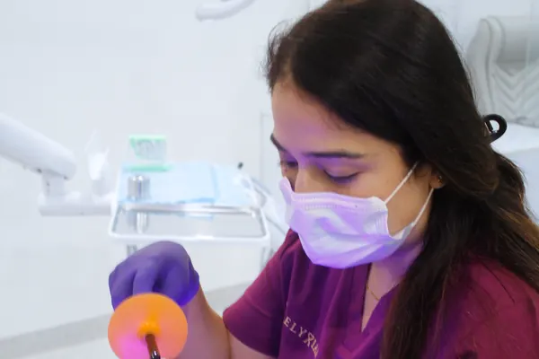
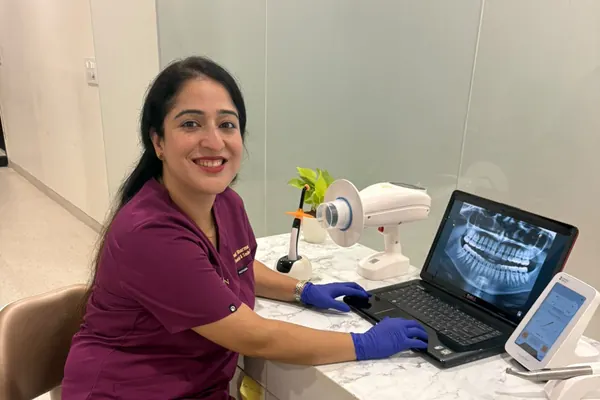
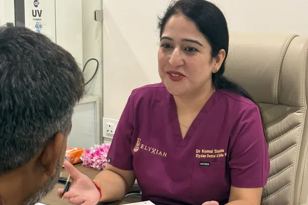
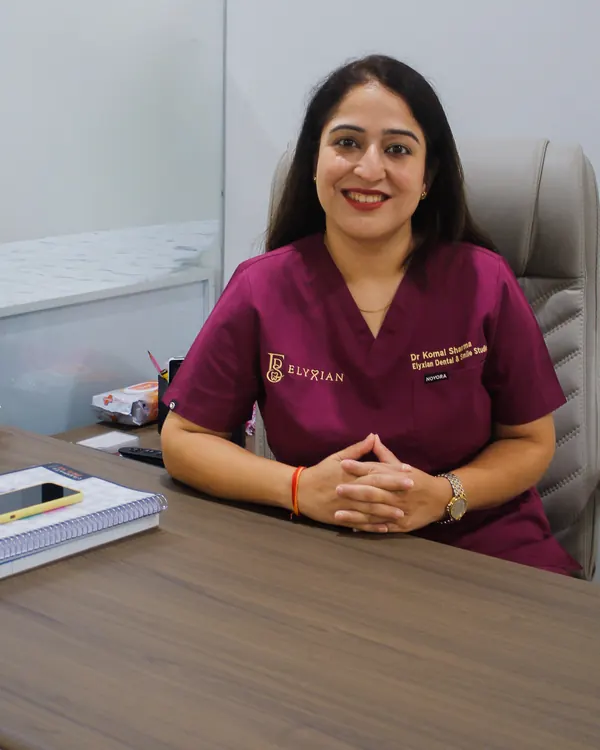
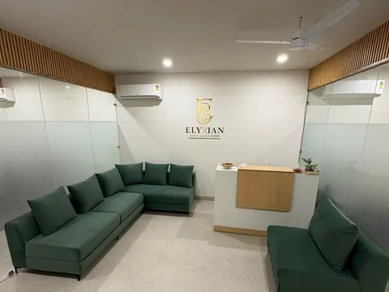
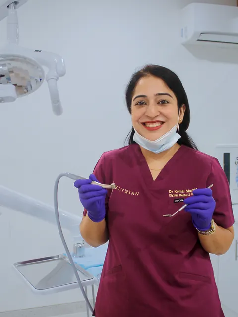
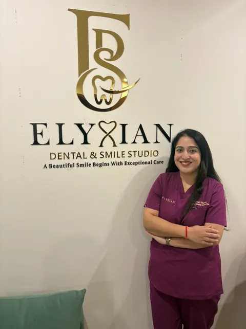
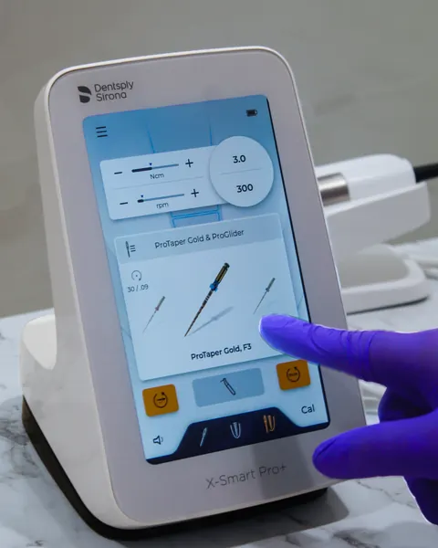
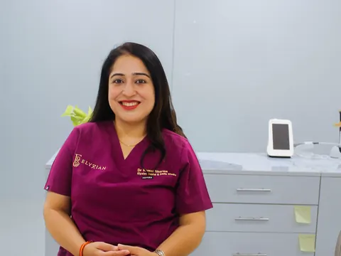
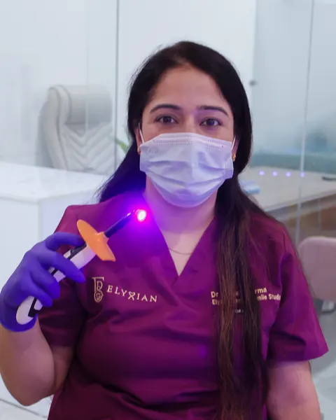

, dental clinic in Lajpat Nagar, New Delhi
Dental & Smile Studio
At the dentist, you should always know what happens next.
The Clinic Experience
What happens at your first visit
Five steps, from the message before you arrive to the written plan you take home.
-
Before you arrive
We confirm your time by WhatsApp or phone and tell you what to bring: any earlier X-rays or dental reports, and a list of medicines you take.
-
A conversation first
You stay sitting up. We ask what brought you in, go through your medical history, and listen to anything that worries you.
-
The examination
We check your teeth and gums, and take X-rays only if they are needed to answer a specific question. We tell you what we are doing as we do it, and you can ask us to stop at any point.
-
Your options
We show you what we found and explain the options in plain language, including what each involves, how long it takes, what it costs, and what happens if you choose to wait.
-
What happens next
You leave with a written plan and time to think it over. Unless something is urgent, no treatment needs to start that day. The next step is yours to choose.
Allow about 45 minutes for a first visit.

Sterilisation and safety
Reusable instruments are cleaned and sterilised between every patient. Single-use items are used once and discarded. If you would like to see how this is done, please ask.

Technology
We use equipment to help you understand as well as to help us diagnose. When we take an image of your teeth, we show it to you and explain what it means.

Comfort
We agree a signal before we begin, so you can pause treatment at any moment. We explain each step first, and leave enough time between appointments that you are not rushed.

Meet the Doctor
Who you will meet
A few lines in the doctor’s own words: why they practise, and how they like to work with the people they treat.
What we treat
Explore the treatments we provide. Planning and costs are discussed at your consultation, once we have examined you.
-

General and preventive care
-


Cosmetic dentistry
-


Implants
-
Orthodontics
-

Root canal treatment
-
Paediatric dentistry
1 of 6
Oral Health Essentials
What to do at home
Short answers to the questions we hear most often.
How should I brush my teeth?
Brush twice a day for about two minutes, with a soft-bristled brush and fluoride toothpaste. Angle the bristles towards the gumline and use small, gentle movements. Spit out the toothpaste afterwards, without rinsing, so the fluoride stays on your teeth.
Do I really need to floss?
A brush cannot reach between your teeth, so clean those spaces once a day. Curve the floss around each tooth and slide it gently under the gumline. If floss is awkward, interdental brushes do the same job and may suit you better.
How often should I visit a dentist?
Many people are seen every six to twelve months, but the right interval depends on your teeth, your gums and your general health. Your dentist can advise you. Come in sooner if you notice pain, swelling or anything new.
When should my child first see a dentist?
By their first birthday, or when the first tooth appears. Under three, use a smear of fluoride toothpaste the size of a grain of rice. From three to six, use a pea-sized amount. Help with brushing until around age seven or eight.
Why do my gums bleed?
Bleeding is often an early sign of gum inflammation caused by plaque. It is tempting to avoid the area, but gentle, thorough cleaning usually helps. If the bleeding continues for more than a week or two, see a dentist.
Why are my teeth sensitive?
Common causes include worn enamel and receding gums, which expose the softer layer beneath. A soft brush and a toothpaste for sensitive teeth often help. If the sensitivity lingers or sits in one tooth, see a dentist, as it can also signal decay or a crack.
What should I do in a dental emergency?
If an adult tooth is knocked out, hold it by the crown, rinse it briefly without scrubbing, and try to place it back in the socket. If you cannot, keep it in milk and see a dentist straight away, ideally within the hour. Do not put a baby tooth back.
If you have swelling with fever, or any difficulty breathing or swallowing, seek emergency medical care at once. See the emergency instructions.
Do home whitening tricks work?
Lemon juice and other acidic mixtures can erode enamel, and that damage does not grow back. There is little evidence for charcoal powders, which can also be abrasive. Whitening does not change the colour of crowns or fillings, and very white is not the same as healthy.
Reviewed by Dr. Komal Sharma. This is general information and not a substitute for a consultation.
FAQ
What people ask before they come
What happens at a first visit?
A conversation, an examination, and an explanation of your options. Allow about 45 minutes, and bring any earlier reports and a list of your medicines. See each step.
How can I pay?
We accept UPI, debit and credit cards, and EMI through selected banks. Costs are discussed and agreed before treatment begins.
I get very anxious at the dentist. What can you do?
Please tell us when you book. Many people feel this way. We explain each step first, agree a signal to pause, and go at your pace. If you would like to discuss sedation, the doctor can explain at your consultation whether it is available and suitable for you.
What if I have a dental emergency?
During clinic hours, call us so we can advise you. Outside clinic hours, send a WhatsApp message and the clinic will reply at the earliest opening. See the emergency instructions.
When are you open?
- Monday to Saturday 10:00 am to 7:00 pm
- Sunday Closed